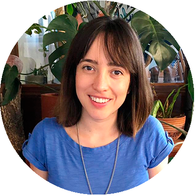

Carmen Villa
DIRECTORA Y FUNDADORA
Especialista en problemas y generación de soluciones (o más problemas). Feminista. Maestra en Políticas Públicas en Educación por McGill University.
Eduardo Flores
FUNDADOR Y ADMINISTRADOR
Promotor del desarrollo sustentable, la ciudad y la gobernanza; profesor y alumno. Asiduo viajero.

Enriqueta Rincon
COORDINADORA DE PROYECTOS
Apasionada por el uso de herramientas de diseño para el cambio social. Diseñadora industrial por el ITESM.
Alma Ortiz
COORDINADORA DE COMUNICACIONES
Joven pedagoga, feminista, activista por los derechos humanos, agente de cambio.
Eduardo Mañaga
ENCARGADO DE PROYECTOS
Maestro en Derecho Fiscal, egresado de la licenciatura en derecho. Entusiasta deportista y guitarrista.
Sandra de los Santos
MEDIOS
Periodista, docente, estudiante, hija, compañera, ciudadana, una mujer que está segura que un mundo mejor es posible.
Felipe Alvarado
DISEÑADOR
PDiseñador gráfico. Especializado en marca e ilustración. Amante de la música y todo lo agradable a la vista.